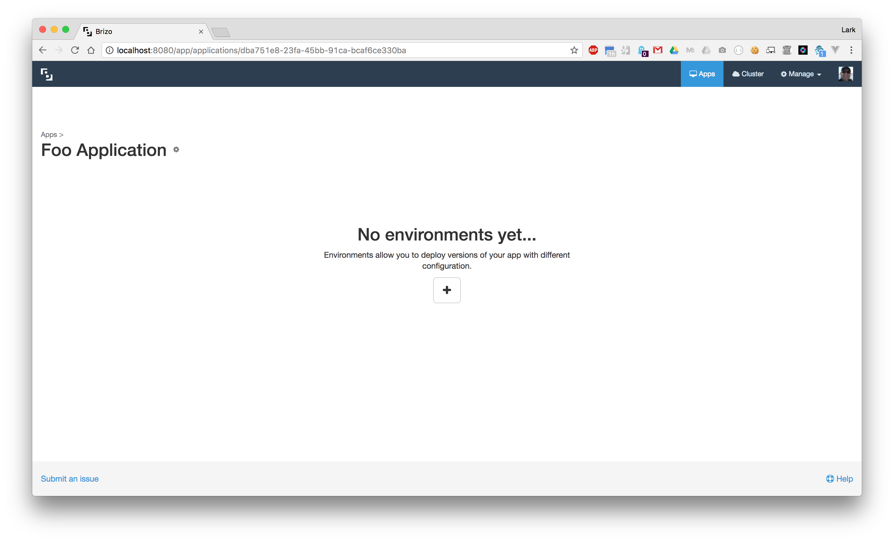
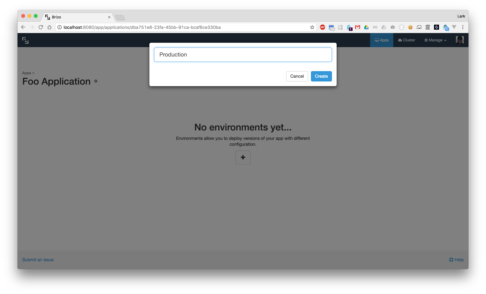
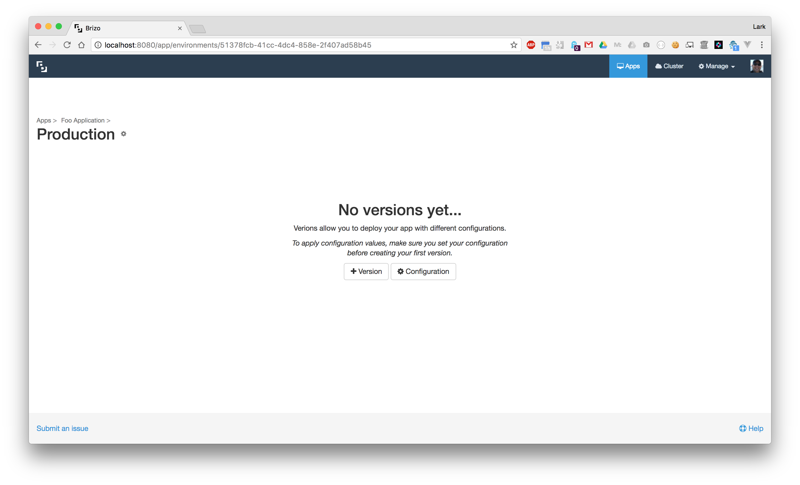

<div class="help-index">
  <div class="container-fluid">
    <div class="row">
      <div class="col-md-6 col-md-offset-3">
        <a [routerLink]="['/help']">&laquo; Back to Help</a>
        <h3>Environments</h3>
        <hr />
        <p>Now that you have a new application created, you will need to create an environment. In Brizo, an environment corresponds to a Kubernetes <a href="https://kubernetes.io/docs/user-guide/services/" target="_blank">service</a>.</p>
        <br />
        <h4>Create Environment</h4>
        <p>When creating a new environment in Brizo will be the first time that Brizo interacts with your Kubernetes cluster by creating a service.</p>
        <p>Just like when creating an application, click on the <b>+</b> to create a new environment. A modal will display asking you to name your new environment.</p>
        
        
        <p>After you successfully created a new environment, you will be redirected to the environment details page. From here you can create your first version of the application.</p>
        
        <p>Next step is to <a [routerLink]="['/help/versions']">create a version &raquo;</a></p>
      </div>
    </div>
  </div>
</div>